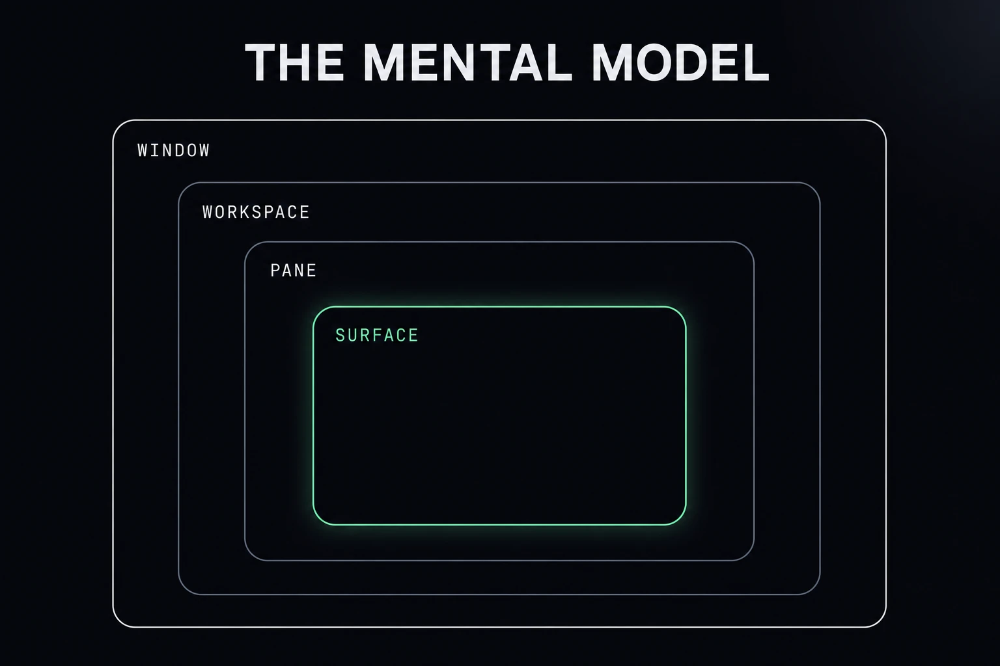
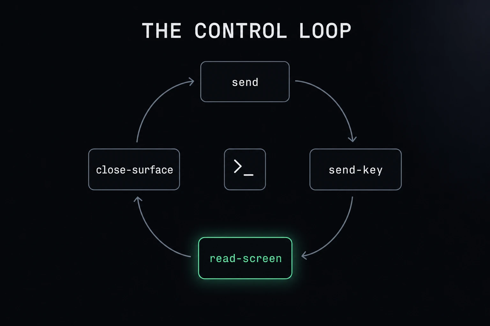
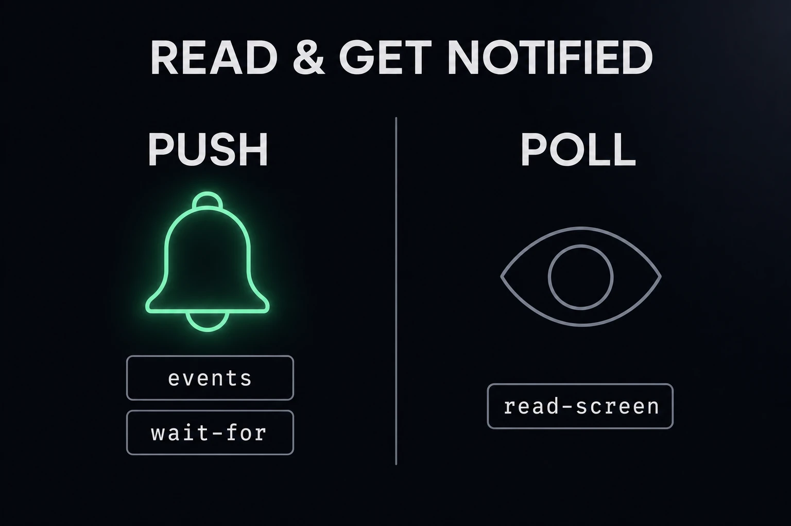
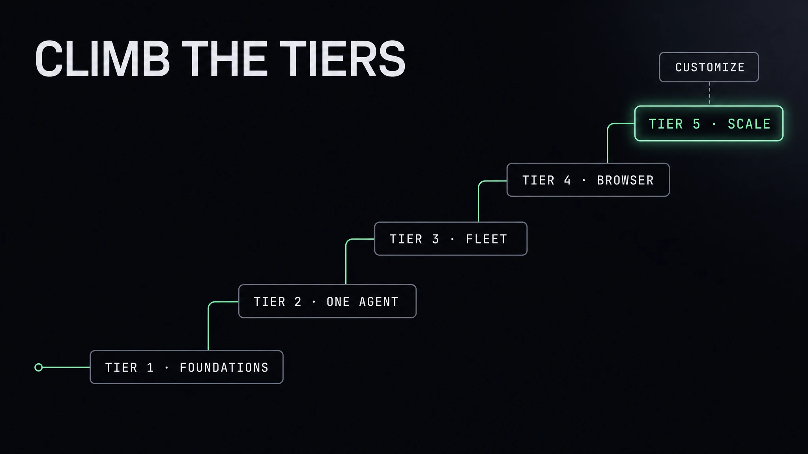

Problems come first, tools come second.
surface:3) exposed over a CLI and socket. One orchestrator, itself an agent, drives the whole window: spawn, prompt, read, hand off. Agents operating agents.cmux.json commands[]), and crash-proof resume rebuilds it after a restart. A fresh team per feature in seconds.Everything in cmux nests in one hierarchy. Learn the five boxes and the verbs fall out of them.

| Box | What it is | The verb |
|---|---|---|
| Window | A macOS window with its own sidebar. | cmux new-window |
| Workspace | A sidebar entry (a “tab”). | cmux workspace create |
| Pane | A split region within a workspace. | cmux new-split <dir> |
| Surface | A tab within a pane (terminal or browser). | cmux new-surface |
| Panel | The content itself, created automatically. | n/a |
Window → Workspace → Pane → Surface → Panel. Refs like workspace:2 and surface:3 are handles you capture at creation and thread through every later call.
Four verbs are the orchestration loop. Wrap them in a workspace and one agent is operating four others:

send/send-key push into each surface, read-screen is the agent's eyes, close-surface ends it.cmux send --surface surface:3 "claude" # type into a terminal cmux send-key --surface surface:3 enter # press a key (submit) cmux read-screen --surface surface:3 # read what it printed (its eyes) cmux close-surface --surface surface:3 # shut it down (teardown)
send types; send-key submits. There is no modifier chord. To stop a running agent, close-surface it cleanly.
An orchestrator does two things a plain script can't:
read-screen.events / wait-for.The rule: push the events, poll only the free-form content you must inspect.

cmux events / wait-for are the doorbell (push); read-screen is how you read the room (poll).| To know… | Use | Push or poll |
|---|---|---|
| an agent finished / needs input | cmux events --name agent.hook | push |
| block until task X signals done | cmux wait-for X | push (blocks) |
| any notification, durably | cmux events --category notification --reconnect | push |
| what the agent actually wrote | cmux read-screen --surface <ref> --scrollback | poll |
The event payload carries workspace_id / surface_id / notification_id and content lengths, but the title and body are redacted. Fetch the text by reading the surface.
The capability library: 31 natural-language prompts that climb from “open one workspace” to “run an autonomous, browser-verified software factory”, then customize the whole thing. Hit Copy prompt and hand any one to your orchestrator.

The atomic loop: create a surface, type into it, read it back, tear it down. No agents yet, just the orchestrator and terminals.
The pivot: the terminal an agent drives can itself contain another agent. This is the whole idea, in miniature.
cmux.json or --layout).One orchestrator, many agents. Broadcast, shard, watch, react, and tear down at scale.
A cmux surface can be a browser, with a Playwright-style API. Now agents build, run, and verify in one window.
The largest moves: multiple windows, organized groups, remote and cloud agents, restart survival, and the capstone.
Per-workspace identity is scriptable on the fly, the terminal's look is a live-reloaded global, and the app's actions, layouts, and sidebar are yours to redefine, globally or per-repo.
commands layouts + a right-sidebar Dock of tools..cmux/cmux.json + a hot-reloading custom sidebar bound to live data.A tool has agentic access when it ships a CLI, an API — some programmatic surface your agents can drive. Not a GUI a human clicks. A handle a machine can hold.
If a tool has no programmatic access, I ignore it. Every engineering tool has to have this now.
It's the #1 opportunity of the agentic era — and one of the five elements every agentic tool needs. The shape is simple: agentic access = agent speed.
Three terminals, three different problems:
The honest question isn't "which is best," it's: how much of cmux is just tmux plus glue, what does Warp do better, and what is cmux-only?
| Capability | cmux | tmux | Warp |
|---|---|---|---|
| Built for | ● orchestrating agent fleets | ○ multiplexing terminals | ◐ one AI terminal + cloud agents |
| Platform reach | ○ macOS only (iOS beta) | ● Linux / macOS / BSD / WSL | ● macOS / Linux / Windows |
| License / openness | ◐ GPL-3.0-or-later (+ commercial) | ● ISC, ubiquitous | ◐ AGPLv3 client; Oz cloud proprietary |
| Create / type / read / kill panes | ● four verbs | ● send-keys / capture-pane / kill-pane | ◐ Blocks + splits |
| Input control (Ctrl-C, chords) | ○ named keys, no Ctrl-C | ● full chords + literal bytes | ● full |
| Scriptable surface API (drive the UI) | ● CLI + socket, every surface addressable | ◐ scriptable, but you build the layer | ◐ Workflows / MCP, not UI-driving |
| Embedded browser (agent self-verifies UI) | ● Playwright-style surface | ○ none | ○ none |
| Agent-session resume (conversation) | ● layout + native session IDs | ◐ relaunch only (resurrect) | ◐ cloud-managed |
| Event bus / push notifications | ● cursored JSON events + wait-for | ◐ control-mode / hooks (build it) | ◐ completion alerts |
| Visible multi-agent command center | ● sidebar, attention rings, per-pane CPU/mem | ◐ single text status line | ◐ Block UI, not a fleet grid |
| Remote persistence (detach / reattach) | ◐ ssh / vm + surface reconnect | ● founding strength, ~20 yrs hardened | ◐ Warpify subshells |
| Team collaboration / sharing | ○ single-user by design | ○ none (manual plugins) | ● Warp Drive: sync, Notebooks, SSO |
| Maturity / stability | ◐ young (v0.6x), API still moving | ● battle-tested since 2007 | ◐ ~3 yrs, fast-moving |
| Pricing | ● free, BYO model keys | ● free | ◐ free tier; Build $20 · Biz $50/seat + BYOK |
What cmux is genuinely best at
--json output — that's what lets one agent operate many others.wait-for and notify let an orchestrator react the instant an agent finishes — instead of polling scrollback.Roughly 80–85% of the local orchestration loop is replicable in tmux + a ~150-line shell wrapper — and for the overlap, tmux is often better: it sends Ctrl-C, handles any modifier chord, survives flaky SSH with true detach/reattach, and runs on every OS. tmux is tried-and-true: ISC-licensed, shipping since 2007, hardened on every server.
cmux is young — a v0.6x native Swift/AppKit app, macOS-only, single-user, with an API still in motion and a small community. You pay a newness tax: fewer years of hardening, more breaking changes, fewer escape hatches (no Ctrl-C, no cross-platform, no team layer). The bet only pays off because the remaining ~15–20% — embedded browser, agent-aware native GUI, conversation resume, JSON event bus — is exactly what cmux is for, and is not reachable from tmux at any wrapper thickness, nor from Warp's Block model.
tmux already is the orchestration loop — and a better one for raw multiplexing, input, and persistence. cmux's value is the agent-aware shell around that loop; Warp's is a polished single-operator terminal with a cloud. Pick by the problem, not the hype.cmux to command a fleet · tmux to script panes anywhere · Warp to supercharge your own command line